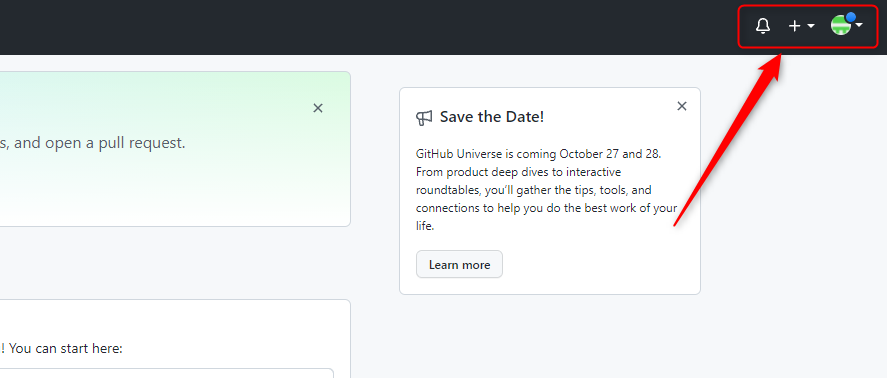

Кнопок главного меню – всего три. Чтобы их увидеть, посмотрите в правый верхний угол сайта GitHub. Вот эти кнопки:
«Не по-програмисстски» их можно назвать:
Давайте подберем для них «програмистские» имена:
GitHub Notification – уведомления от сайта GitHubAdd New – возможность быстро что-то добавитьДавайте посмотрим на каждую кнопку в отдельности.